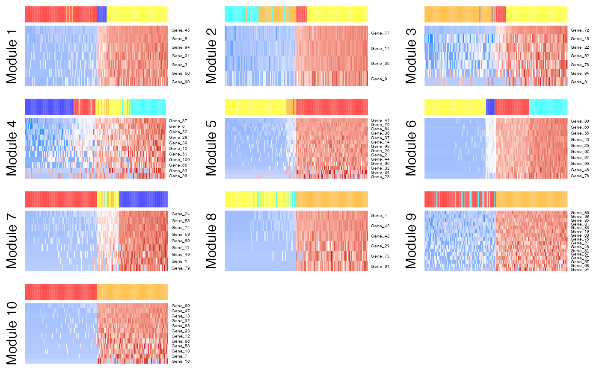

Renders a heatmap for selected featureModule. Cells are
ordered from those with the lowest probability of the module on the left to
the highest probability on the right. Features are ordered from those
with the highest probability in the module
on the top to the lowest probability on the bottom. Use of
save_multi_panel_figure is recommended for
outputting figures in various formats.
moduleHeatmap( x, useAssay = "counts", altExpName = "featureSubset", modules = NULL, featureModule = NULL, col = circlize::colorRamp2(c(-2, 0, 2), c("#1E90FF", "#FFFFFF", "#CD2626")), topCells = 100, topFeatures = NULL, normalizedCounts = NA, normalize = "proportion", transformationFun = sqrt, scaleRow = scale, showFeatureNames = TRUE, displayName = NULL, trim = c(-2, 2), rowFontSize = NULL, showHeatmapLegend = FALSE, showTopAnnotationLegend = FALSE, showTopAnnotationName = FALSE, topAnnotationHeight = 5, showModuleLabel = TRUE, moduleLabel = "auto", moduleLabelSize = NULL, width = "auto", height = "auto", unit = "mm", ncol = NULL, useRaster = TRUE, returnAsList = FALSE, ... ) # S4 method for SingleCellExperiment moduleHeatmap( x, useAssay = "counts", altExpName = "featureSubset", modules = NULL, featureModule = NULL, col = circlize::colorRamp2(c(-2, 0, 2), c("#1E90FF", "#FFFFFF", "#CD2626")), topCells = 100, topFeatures = NULL, normalizedCounts = NA, normalize = "proportion", transformationFun = sqrt, scaleRow = scale, showFeatureNames = TRUE, displayName = NULL, trim = c(-2, 2), rowFontSize = NULL, showHeatmapLegend = FALSE, showTopAnnotationLegend = FALSE, showTopAnnotationName = FALSE, topAnnotationHeight = 5, showModuleLabel = TRUE, moduleLabel = "auto", moduleLabelSize = NULL, width = "auto", height = "auto", unit = "mm", ncol = NULL, useRaster = TRUE, returnAsList = FALSE, ... )
| x | A numeric matrix of counts or a
SingleCellExperiment
with the matrix located in the assay slot under |
|---|---|
| useAssay | A string specifying which assay
slot to use if |
| altExpName | The name for the altExp slot to use. Default "featureSubset". |
| modules | Integer Vector. The featureModule(s) to display.
Multiple modules can be included in a vector. Default |
| featureModule | Same as |
| col | Passed to Heatmap. Set color boundaries and colors. |
| topCells | Integer. Number of cells with the highest and lowest
probabilities for each module to include in the heatmap. For example, if
|
| topFeatures | Integer. Plot `topFeatures` features with the highest
probabilities in the module heatmap for each featureModule. If |
| normalizedCounts | Integer matrix. Rows represent features and columns
represent cells. If you have a normalized matrix result from
normalizeCounts, you can pass through the result here to
skip the normalization step in this function. Make sure the colnames and
rownames match the object in x. This matrix should
correspond to one generated from this count matrix
|
| normalize | Character. Passed to normalizeCounts if
|
| transformationFun | Function. Passed to normalizeCounts if
|
| scaleRow | Function. Which function to use to scale each individual row. Set to NULL to disable. Occurs after normalization and log transformation. For example, scale will Z-score transform each row. Default scale. |
| showFeatureNames | Logical. Whether feature names should be displayed. Default TRUE. |
| displayName | Character. The column name of
|
| trim | Numeric vector. Vector of length two that specifies the lower
and upper bounds for plotting the data. This threshold is applied
after row scaling. Set to NULL to disable. Default |
| rowFontSize | Numeric. Font size for feature names. If |
| showHeatmapLegend | Passed to Heatmap. Show legend for expression levels. |
| showTopAnnotationLegend | Passed to HeatmapAnnotation. Show legend for cell annotation. |
| showTopAnnotationName | Passed to HeatmapAnnotation. Show heatmap top annotation name. |
| topAnnotationHeight | Passed to HeatmapAnnotation. Column annotation height. rowAnnotation. Show legend for module annotation. |
| showModuleLabel | Show left side module labels. |
| moduleLabel | The left side row titles for module heatmap. Must be
vector of the same length as |
| moduleLabelSize | Passed to gpar. The size of text (in points). |
| width | Passed to multi_panel_figure. The width of the output figure. |
| height | Passed to multi_panel_figure. The height of the output figure. |
| unit | Passed to multi_panel_figure. Single character object defining the unit of all dimensions defined. |
| ncol | Integer. Number of columns of module heatmaps. If |
| useRaster | Boolean. Rasterizing will make the heatmap a single object
and reduced the memory of the plot and the size of a file. If |
| returnAsList | Boolean. If |
| ... | Additional parameters passed to Heatmap. |
A multi_panel_figure object if plotting more than one module heatmaps. Otherwise a HeatmapList object is returned.
